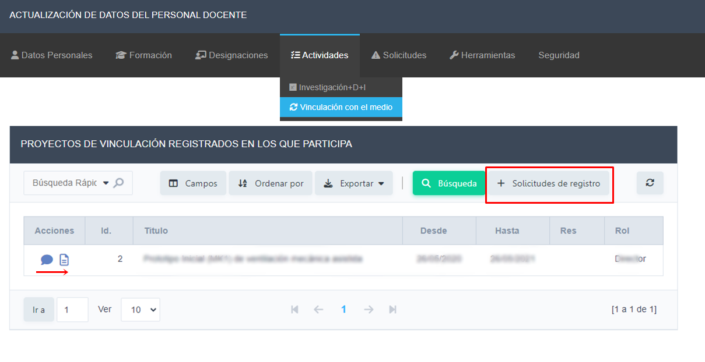

La pestaña de ACTIVIDADES REGISTRADAS muestra las actividades de vinculación, que fueron recopiladas. Si encuentra omisiones o advierte datos incorrectos, debe solicitar lo necesario desde la pestaña SOLICITUDES DE REGISTRO
En la pestaña SOLICITUDES DE REGISTRO, puede editar alguna solicitud ya generada desde el icono, o bien crear una nueva desde el botón Nuevo.
Para agregar una nueva solicitud debe completar la siguiente información.
Una vez completado hacer clic en el botón agregar, teniendo presente los campos obligatorios, también tiene los iconos de ayuda para guiarlo en el contenido de los mismos.
Desde la facultad se verificará su solicitud, y en caso de corresponder podrá luego visualizarla en la Pestaña Actividades registradas.